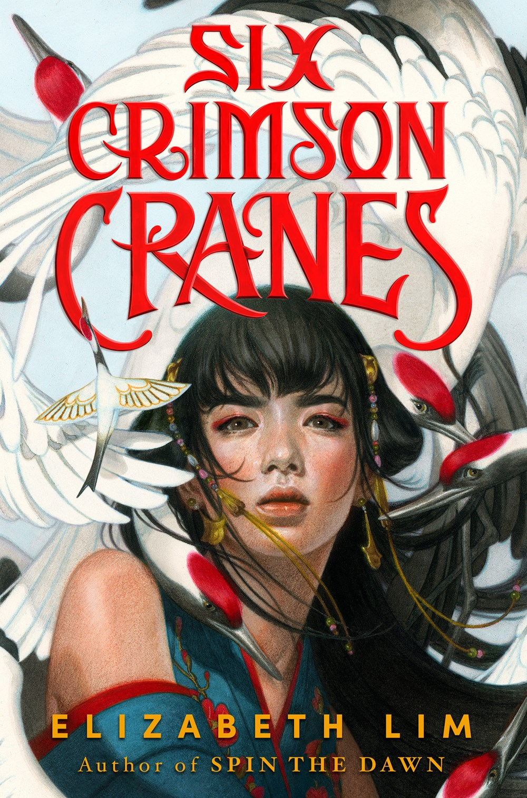

🔙 Back to All Books
- 
-
Six Crimson Cranes
Elizabeth Lim
Book Description
NEW YORK TIMES BESTSELLER • A princess in exile, a shapeshifting dragon, six enchanted cranes, and an unspeakable curse… Drawing from fairy tales and East Asian folklore, this original fantasy from the author of Spin the Dawn is perfect for fans of Shadow and Bone.
Shiori’anma, the only princess of Kiata, has a secret. Forbidden magic runs through her veins. Normally she conceals it well, but on the morning of her betrothal ceremony, Shiori loses control. At first, her mistake seems like a stroke of luck, forestalling the wedding she never wanted. But it also catches the attention of Raikama, her stepmother.
A sorceress in her own right, Raikama banishes the young princess, turning her brothers into cranes. She warns Shiori that she must speak of it to no one: for with every word that escapes her lips, one of her brothers will die.
Penniless, voiceless, and alone, Shiori searches for her brothers, and uncovers a dark conspiracy to seize the throne. Only Shiori can set the kingdom to rights, but to do so she must place her trust in a paper bird, a mercurial dragon, and the very boy she fought so hard not to marry. And she must embrace the magic she’s been taught all her life to forswear–no matter what the cost.
Genres
Fantasy | Young Adult | Romance | Retellings | Fiction | Mythology
About the Author
Elizabeth Lim grew up on a hearty staple of fairy tales, myths, and songs. Her passion for storytelling began around age 10, when she started writing fanfics for Sailor Moon, Sweet Valley, and Star Wars, and posted them online to discover, "Wow, people actually read my stuff. And that's kinda cool!" But after one of her teachers told her she had "too much voice" in her essays, Elizabeth took a break from creative writing to focus on not flunking English...